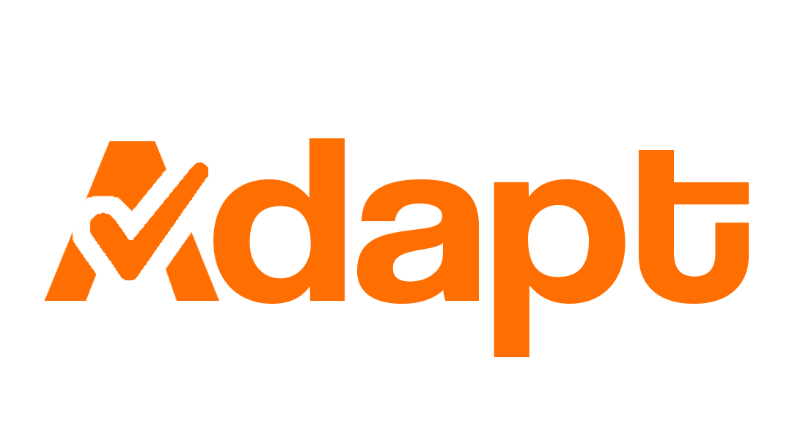

O Adapt é um sistema web que utiliza tecnologia e inteligência artificial para sugerir adaptações pedagógicas em provas e atividades acadêmicas, tornando o processo avaliativo mais inclusivo e acessível. O projeto foi desenvolvido como parte da disciplina Projeto Integrador, com o objetivo de evoluir para um protótipo funcional e, futuramente, um produto de impacto educacional. O objetivo do projeto é oferecer aos professores uma ferramenta que automatize e personalize adaptações em avaliações e garantir que alunos com TDAH possam realizar provas mais claras, justas e adequadas às suas necessidades.
Ver no GitHubEste projeto tem como objetivo promover a indústria criativa e sustentável em espaços urbanos, apoiando pequenos negócios e empreendedores locais. A aplicação visa conectar esses negócios com as comunidades urbanas por meio de uma plataforma digital, promovendo a visibilidade e o desenvolvimento dessas iniciativas. Ao unir pequenos negociantes e suas atividades em áreas urbanas revitalizadas ou em novos centros de desenvolvimento planejados, buscamos contribuir para a diversificação econômica, a criação de comunidades mais autossuficientes e a promoção da sustentabilidade urbana.
Ver no GitHubO objetivo do projeto é desenvolver uma aplicação em Java que simule três sistemas de gerenciamento: uma clínica médica, um sistema de eventos e um restaurante. A aplicação será construída utilizando classes e objetos para modelar os principais elementos de cada cenário, aplicando conceitos de programação orientada a objetos, como encapsulamento, métodos e estruturas de decisão.
Ver no GitHub